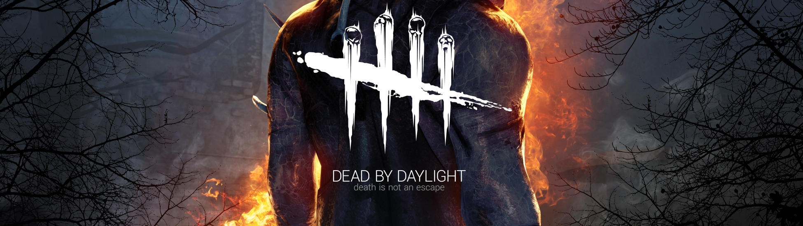
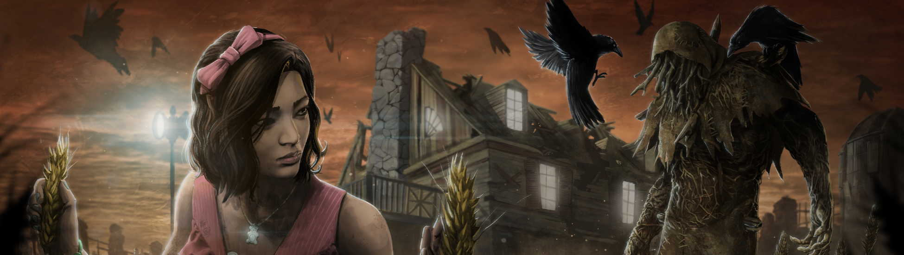

No recuerdo las veces que intenté jugar a Dead by Daylight aprovechando algún "finde gratis", pero sé que fueron muchas y en todos los casos se me acabaron pasando por despiste. Hasta que hace días saltó por sorpresa un nuevo DLC... sobre Silent Hill para junio y procedí a instalar el juego con Xbox Game Pass.
No tenía excusa para satisfacer por fin mi curiosidad y ver el revuelo de este juego online asimétrico que hasta ahora no ha parado de fichar rostros memorables del género slasher, como Freddy Krueger, Leatherface, Michael Myers o Ghostface.
Es curioso, porque Dead by Daylight tuvo una recepción bastante tibia al principio por parte de la crítica, en parte por no contar con fichajes de relumbrón al principio que tapasen un poco sus carencias a nivel jugable. Porque esta clase de juegos no son perfectos, es algo unánime que no para de repetirse año tras año, pero saben cómo picarte y divertirte para que les acabes perdonando sus fallos.
Este trabajo de Behaviour Interactive tampoco es la excepción y lo cierto es que los primeros minutos de su tedioso tutorial casi logran que lo dejase de lado por culpa de lo mal que explica al principio la mecánica con el generador. Después de comprobar los entresijos de los supervivientes y del propio asesino, me adentré en el único modo que hay disponible: porque u optamos por partidas públicas o por privadas, pero el modo es el mismo, el de cuatro personas contra un asesino.
Pequé de valentía en la primera partida como asesino pensando que lo explicado en el tutorial me serviría para comprender a la perfección su idiosincrasia, pero lo cierto es que me dieron la del pulpo y no pude matar a nadie. No fue hasta la tercera cuando empecé a jugar medianamente bien, haciendo algún sacrificio para el Ente, pese a que me topé justo después con una persona tóxica de Internet a la que no le gustó mi manera de jugar y que me acosó luego por mensaje privado.
Y es que Dead by Daylight muestra al final de cada partida, aparte de los resultados, lógicamente, un sistema para valorar si nos ha gustado la propia partida y valorar o premiar el comportamiento de cada jugador. Algo bueno y malo a la vez, que ya sabemos cómo se toman algunos este ocio interactivo.
Casi sin darme cuenta, acabé picado y enganchado para subir de nivel a mi asesino (mi primera elección fue el Doctor) desbloqueando nodos a bade de puntos de sangre con mejoras u objetos de toda índole que vienen bien para modificar ciertos parámetros de nuestro personaje. Por ejemplo, conseguir una ofrenda para que se reduzca moderadamente la presencia de la niebla en el mapa.
En este sentido, me sorprendió gratamente que todos los mapas se generen de manera procedimental, variando la localización de los generadores, ganchos, trampillas y resto de objetos, manteniendo, por lo demás, la ambientación típica de cada uno. Me sorprendió, porque son mapas grandes y con un diseño confuso, lo cuál tiene su lógica para que ningún bando parta con ventaja en las partidas.
Dead by Daylight, como sucede con otros juegos de su estilo, varía ostensiblemente si somos del bando de los supervivientes o controlamos al asesino. Para empezar, los supervivientes cuentan con una vista en tercera persona, mientras que el asesino lo hace en primera. Es más, este último no puede morir, al contrario que el reciente Predator: Hunting Grounds de Illfonic.
Que un bando gane o pierda depende de los generadores o del propio Ente si llegamos al estado "Acabemos con esto". Los que tienen todas las de perder (sobre el papel) son los supervivientes, porque para ganar necesitan activar cinco generadores y de ese modo salir por una de las dos puertas que se abren a continuación. Pero claro, este tipo de acciones, o los fallos en las pruebas de habilidad con Quick-Time Events, alertan al asesino de su presencia. Porque aquí no podemos consultar un mapa como tal, sino valernos de las pistas sonoras o visuales que nos vayamos encontrando a la hora de explorar con el asesino.
Dead by Daylight se disfruta tanto manejando al asesino como sufriendo con los supervivientes. Primero, por encarnar a un asesino de igual modo a las películas del género slasher, que eso siempre va a molar pese a la torpeza o lentitud que muestren por momentos. Y segundo, por ver a los compañeros caer en las garras del gancho y estar ante el dilema moral de ayudarlos pese a que el asesino ronde la zona, o esperar a que caigan todos y rezar para encontrar la trampilla para escapar como único superviviente sin necesidad de activar los generadores.
Cada asesino se diferencia del resto en base a su velocidad, habilidades o su forma de atacar, siendo más o menos difíciles de controlar. Lo malo es que los que vienen de base no pertenecen a ninguna saga conocida, pese a tirar de clichés reconocibles del género. Si queremos disfrutar de los que están basados en películas como Scream, Pesadilla en Elm Street, Halloween o el fututo Silent Hill, habrá que pasar por caja. Y la suma de todos estos DLC supera los 130 euros.
Hay otros contenidos (unos pocos) que sí podemos desbloquear a base de jugar mediante los fragmentos iridiscentes que se consiguen obteniendo experiencia en cada partida o subiendo de nivel a los personajes, pero son contenidos en su mayoría estéticos y con pocos supervivientes o asesinos a desbloquear. De ahí que pese a los buenos (y malos) momentos que me hayan dejado estas partidas a Dead by Daylight, dudo mucho que vaya a pasar por caja en un futuro... salvo que saquen un pack en físico con todo, que la edición especial no trae gran cosa.
Para añadir algo más de imprevisibilidad al asunto, los escenarios tienen algunos puntos clave pero se generan procedimentalmente lo que da pie a la ubicación aleatoria de metas como los generadores o los ganchos de sacrificio. Eso también sucede con los árboles de habilidades (llamados redes de sangre) con los que podemos gastar los puntos de experiencia acumulados en nuevas habilidades: como serán al azar, no habrá dos personajes iguales
Ahora es cuando llegamos al conflicto: por lo que estamos comentando, Dead by Daylight parece bastante divertido, pero abajo le ponemos una nota (ya sabemos que la habéis visto, pillines)... Y es que hay bastantes piedras en el camino. Comenzaremos por una inherente al juego: por mucha aleatoreidad y tensión que haya, al final la cosa se reduce siempre a lo mismo, activar los interruptores y huir o buscar a las víctimas y colgarlas en los ganchos. No hay modos extra (solo podemos elegir ser víctima o perseguidor y jugar con amigos o con otros usuarios de Internet), ni demasiados personajes para seleccionar. Esta "edición especial" de consolas consta con 7 víctimas y 6 asesinos diferentes, pero faltan contenidos que ya están en la versión PC, como el Michael Myers de Halloween. El resultado es que la experiencia acaba volviéndose algo repetitiva si no encontramos jugadores a la altura de las circunstancias. Por suerte, es bastante fácil encontrar partidas y, si somos asesinados, no hemos de esperar a que la partida acabe (toma nota, Friday the 13th) para lanzarnos a por otra sesión. Además, su precio de en torno a 30 euros lo hace algo más accesible que otras propuestas.
Pero la peor parte no se la lleva la premisa (que puede o no gustar, y eso ya es subjetivo), sino la adaptación. Sin duda, el port está hecho sin demasiado gusto por satisfacer a los usuarios de consola. El menú se controla con un cursor como si fuese el ratón del ordenador; hacemos uso y abuso de los botones RB y LB, que sustituyen a los clicks del ratón de la versión PC. Otras veces usaremos los gatillos, pero en general no ha sido intuitiva ninguna de las acciones. No sabemos qué afrenta tenían los desarrolladores con los botones "normales" del mando. Por cierto, está parcialmente traducido. Hay frases en español y luego grandes párrafos en inglés la mar de esclarecedores...
Técnicamente el juego luce similar, y nos atreveríamos a decir que incluso algo más limitado en el apartado de sombras. Pero con la tensión que vamos a gastar en cada partida, de eso no nos daremos demasiada cuenta. Los personajes son bastante simples, y los enemigos, que parecen un espectáculo en el menú, no pasan de imponer más por el hecho de la amenaza que representan que por su diseño. Estamos ante un título que en muchos sentidos y tal vez con algún reajuste sencillo podría haber aparecido en la pasada generación.
El intento por ofrecernos una experiencia tensa lo ha conseguido lograr este título que llega a consola con un aspecto tan parecido al de PC que asusta (más que por los asesinos). Estamos ante una propuesta que tendrá gran utilidad si lo usamos con nuestros amigos, pues si no a la larga la repetitiva premisa llega a aburrir al más santo. Y es que arreglar motores y salir corriendo tampoco es la más buscada de las actividades para unas vacaciones... ni para desestresarse un día de diario. Entre eso, el apartado técnico (muy simple) y el desastre de traducción, Dead by Daylight no pasa de ser un port sin entusiasmo ni novedades.